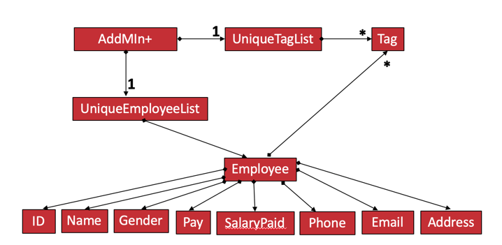
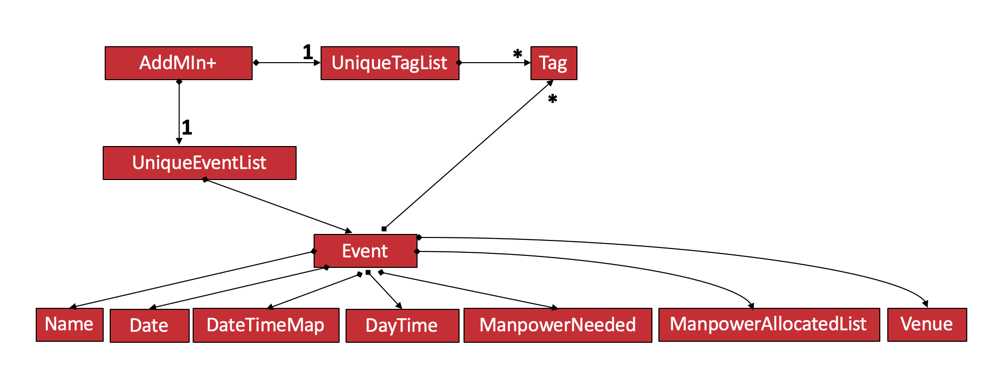

Overview of Project
AddMin+ is an all-in-one administration desktop application, specially designed to ease the workload of the admin staffs in these companies and allow him/her to effectively handle the administrative tasks of the company. It is mainly a CLI application, but also has a GUI built with JavaFX. AddMin+ was developed by a team of software engineering students, with a codebase of about 15k lines of code.
About AddMin+, the All in One Administration App

AddMin+ is an all-in-one administration desktop application, that is specially designed for any events management start-up company with limited manpower and resources. These companies would usually only be able to afford to hire one admin staff to handle both the management of events and employees and this can be tough. The Admin+ Team understands the struggles that start-ups faces on a daily basis, and we are here to help!
AddMin+ is specially designed to ease the workload of the admin and allow him/her to effectively handle the administrative tasks of the company by providing the following functions: manpower management, event creation and deletion, editing of event details after creation, manual and automatic manpower allocation for events and providing an overview of all the data via statistics. The purpose of this user guide is show the user how they can use our app to carry out their administrative tasks efficiently and also answer any questions they may have while using our app.
-
AddMin+ is specially designed to help ease the workload by offering a one-stop platform to help deal with the various administrative needs of the company.
-
AddMin+ uses a Command Line Interface(CLI) and displays the results through a Graphical User Interface(GUI) to assist the employee in their specific needs.
Summary of contributions
-
Major enhancement: added and implemented the entire Finance section of the project which includes major GUI implementations and 2 Finance related commands.
-
What it does: allows the user to undo all previous commands one at a time. Preceding undo commands can be reversed by using the redo command.
-
What does it do: The Finance section was implemented to allow users to get the detail of all employees in a easy manner. The tab shows three finance related details which are 'Total Salary' 'Pending To Pay' 'Salary Paid'. Two commands were implemented which are 'pay' and 'undo_pay', allow user to make the payment or undo the payment for the employee.
-
Justification: In the HR department, Finance is a very big issue to handle because after every event there are too many payslips. Having a dedicated Finance tab, along with the 'pay' and 'undo_pay' commands will increase the efficiency of the HR staff greatly.
-
Highlights: The Finance section required a deep understanding of the Employee class as several fields of an Employee object are modified upon the execution of Finance commands. Understanding of the relevant Parser classes were also essential as arithmetic calculations depended on static methods within those Parser classes.
-
-
Minor enhancement: Implement Employee class, and all relevant new fields in the class that did not exist in AB3.
-
Code contributed: [Functional Code] [Test Code] {give links to collated code files}
-
Other contributions:
-
Project management:
-
In charged of the entire Finance feature of AddMin+ which includes 2 Finance related commands. (Pull Request https://github.com/AY1920S1-CS2103T-T11-3/main/pull/238)
-
In charged of Add and Edit commands related to employee. (Pull Request https://github.com/AY1920S1-CS2103T-T11-3/main/pull/92)
-
Managed to refactor person class to employee class and added 5 fields of employee. (Pull Request https://github.com/AY1920S1-CS2103T-T11-3/main/pull/92)
-
PRs reviewed
-
-
Contributions to the User Guide
Given below are sections I contributed to the User Guide. They showcase my ability to write documentation targeting end-users. |
Finance Management
Generate Payment To Employee: pay
Generates the payment for an employee
Format: pay EMPLOYEE_INDEX s/VALUE
Examples:
-
list_em
pay 3 s/50
Generates the payment of employee with $50.
Undo Payment To Employee: undo_pay
Undo the payment for an employee
Format: undo_pay EMPLOYEE_INDEX s/VALUE
Examples:
-
list_em
undo_pay 3 s/50
Undo the payment of employee with $50.
Contributions to the Developer Guide
Given below are sections I contributed to the Developer Guide. They showcase my ability to write technical documentation and the technical depth of my contributions to the project. |
Model component
API : Model.java
The Model,
-
stores a
UserPrefobject that represents the user’s preferences. -
stores the Employee Book and Event Book data.
-
exposes an unmodifiable
ObservableList<Employee>and an unmodifiableObservableList<Event>that can be 'observed' e.g. the UI can be bound to this list so that the UI automatically updates when the data in the list change. -
does not depend on any of the other three components.
As a more OOP model, we can store a Tag list in both Employee and Event, which AddMin+ can reference. This would allow our application to only require one Tag object per unique Tag, instead of each Employee or Event needing their own Tag object. An example of how such a model may look like is given below.
|
+ 

Finance
Implementation
The Finance Feature is implemented to allow users to get the salary details of all employees in an easy manner.
The tab shows three salary related details which are 'Total Salary' 'Pending To Pay' 'Salary Paid'. Two commands were
implemented, which are 'pay' and 'undo_pay', allowing the user to make the payment or undo the payment for the employee.
The `Finance' take in three arguments:
-
employeeIndex- index of event in the displayed employee list -
employeePay- the hourly salary for the specific employee -
employeeSalaryPaid- the total amount of salary has paid to the specific employee
Additionally, the Finance uses the following operations:
-
EmployeeEventProcessor#findEmployeeTotalWorkedHours()— Find the total working hours for the specific employee. -
Employee#addSalaryPaid— Update the 'employeeSalaryPaid' for the specific employee. -
finance#updateCards()— Update the finance detail for all employees.
The following class diagrams shows how the Finance` class and utility EmployeeEventProcessor class is implemented:
Given below is an example usage scenario and how the finance feature behaves at each step.
Step 1. The user executes pay 1 s/100 (undo_pay 1 s/100) with the intention to pay 100 dollar to
the first employee in the employee list
Step 2. The command checks if eventIndex is valid.
Step 3. The command calls method of 'Employee#findEmployeeTotalWorkedHours` to get the
total working hours for the specific employee and times employeePay to get the total salary.
Step 4. The command calls method of 'Employee#getEmployeeSalaryPaid()` to get the
employeeSalaryPaid for this specific employee from the storage .
Step 5. The command checks if the value of payment/undo-payment is valid.
| The value of the payment/undo-payment should be positive integer. The value of the payment should be less than the value of 'Pending To Pay'. The value of the undo-payment should be less than the value of 'Salary Paid'. |
Step 6. The command calls Employee#addSalaryPaid to update the employeeSalaryPaid for this specific employee.
For storage purposes, only the Employee#employeeSalaryPaid is saved.
|
Step 7. The command calls Finance#updatecard() to update the PendingToPay of
the employee card. The UI will update accordingly.
Step 8. Done.
The following sequence diagram shows how the auto allocation works:
Aspect: Storage of employees associated with event after successful command
| Feature | Alternative 1 | Alternative 2 |
|---|---|---|
Storage of employees fields after pay/undo-pay command |
Saves only the Pros: Easy to implement. Will use less memory. Cons: Future accesses the 'Pending To Pay' and 'Total Salary' require more time. Decision: Alternative 1 : I decided to proceed with this option* because it creates fewer fields in employees, the 'Pending To Pay' and 'Total Salary' is modified real time. User do not need to input so many fields when they add the employees. |
Saves the Pros: Easy to access the 'Pending To Pay' and 'Total Salary'. Cons: when the user want to add employees, the user have type in all these fields. |
The display of Finance section |
Use CLI display Pros: Easy to implement. Size of jar file will be smaller. Cons: The UI is not user-friendly. |
GUI display Pros: User easy to visualise. Cons: Jar file is larger. Decision: Alternative 2 : I decided to use GUI to display the finance section. It is easier for user to visualise the salary details of the specific employee. |
PROJECT: PowerPointLabs
{Optionally, you may include other projects in your portfolio.}